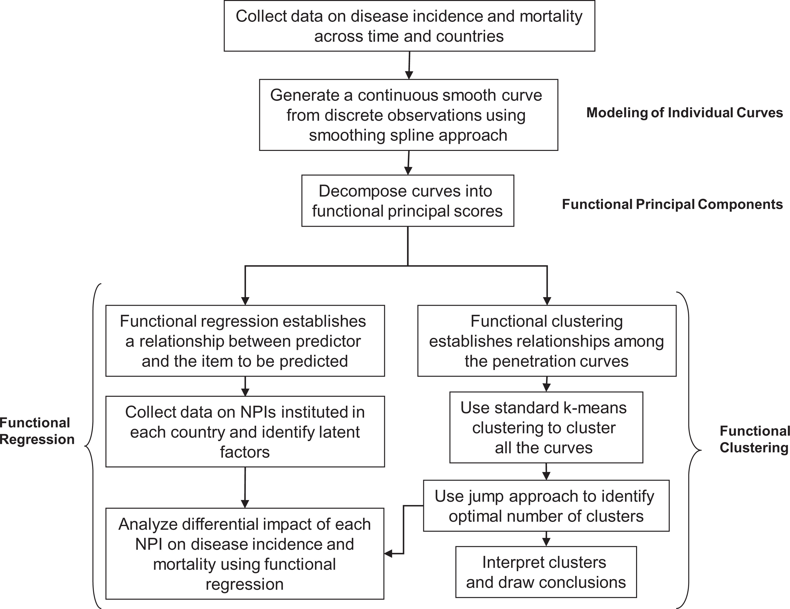
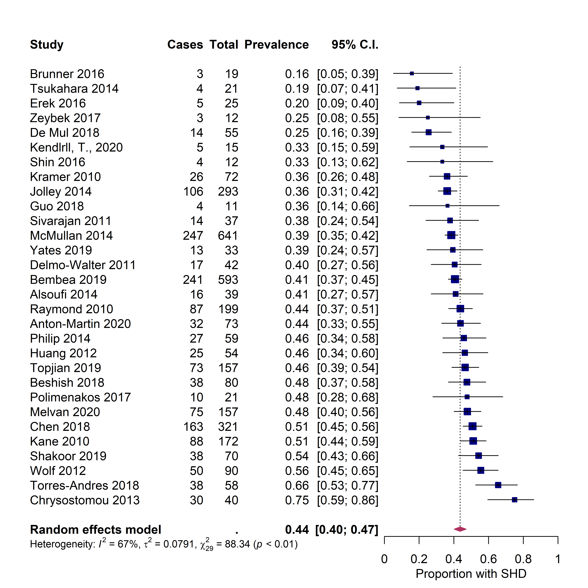
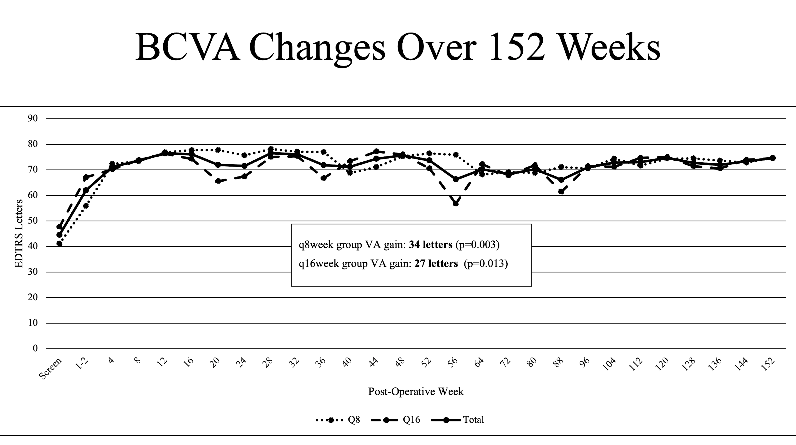

About Me
“We are here to add what we can to life, not to get what we can from it".
~ William Osler

Hey there! I'm Nitish Sood, an ophthalmology resident at Dean McGee Eye Institute!
Nitish graduated from the Medical College of Georgia in 2024 with AOA. He is a student-researcher with 11 peer-reviewed publications and 150+ citations. He co-founded Working Together for Change, a national 501(c)(3) nonprofit dedicated to helping homeless people. His hobbies include rock climbing, hiking, 3D printing, and cooking with his girlfriend.
Nitish graduated from the Medical College of Georgia in 2024 with AOA. He is a student-researcher with 11 peer-reviewed publications and 150+ citations. He co-founded Working Together for Change, a national 501(c)(3) nonprofit dedicated to helping homeless people. His hobbies include rock climbing, hiking, 3D printing, and cooking with his girlfriend.
See Some Recent Research Highlights Below!
1 / 3

Figure 2. FDA approach toward predictive functional clustering.
Prevention vs. Promotion-Focus Regulatory Efforts on the Disease Incidence and Mortality of COVID-19: A Multinational Diffusion Study using Functional Data Analysis
Vikas K, Ashish S, Shaphali G, Nitish S.
Journal of International Marketing. October 2020. doi: 10.1177/1069031X20966563
Vikas K, Ashish S, Shaphali G, Nitish S.
Journal of International Marketing. October 2020. doi: 10.1177/1069031X20966563
2 / 3

Supplemental Figure 3A. Results of pooled survival analysis
Predictors of Survival for Pediatric Extracorporeal Cardiopulmonary Resuscitation: A Systematic Review and Meta-analysis
Sood N, Sangari A, Goyal A, Conway JA.
Medicine. October 2022. PMID: 36181012
Sood N, Sangari A, Goyal A, Conway JA.
Medicine. October 2022. PMID: 36181012
3 / 3

Figure 2. BCVA changes over 152 weeks.
Complications, Compliance and 3-Year Outcomes after Endolaserless Vitrectomy with Aflibercept Monotherapy for Proliferative Diabetic Retinopathy-Related Vitreous Hemorrhage
V Kasetty, D Starnes, M Moses, N Sood, et al.
Published ahead of print at OSLI Retina.
V Kasetty, D Starnes, M Moses, N Sood, et al.
Published ahead of print at OSLI Retina.